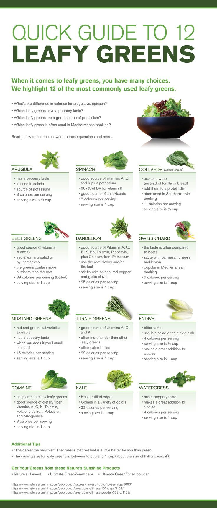

Greens Are Good!
Health Benefits Of Leafy Greens
The Western world’s standard diet is woefully lacking in vitamins. More than 40 percent of adults are lacking in four important vitamins (A, C, K, and E). When we miss out on these vitamins, we miss out on the all the benefits they provide. Deficiencies in any of these categories can lead to health problems. Let’s break them down.
Vitamin A is important for:
- Immune functions
- Vision
- Cell growth
- Reproduction
- Maintenance of organs including the heart and kidneys
Spinach, turnip greens, Swiss chard, and kale all carry this vitamin.
Vitamin C is important for:
- Skin health
- Healing
- Immune functions
- Iron absorption
You'll find Vitamin C in leafy greens such as cabbage, kale, and spinach.
Vitamin K is important for:
- Blood clotting
- Heart health
- Healthy bones
Find this vitamin in lettuces, kale, and spinach.
Vitamin E is important for:
- Immune system function
- Blood vessel health
- Cell interactions
Vitamin E is found in many leafy greens including spinach, Swiss chard, beet greens, and mustard greens.
Packing your diet with healthy greens means you’ll be getting bigger doses of the vitamins your body needs for peak performance.
